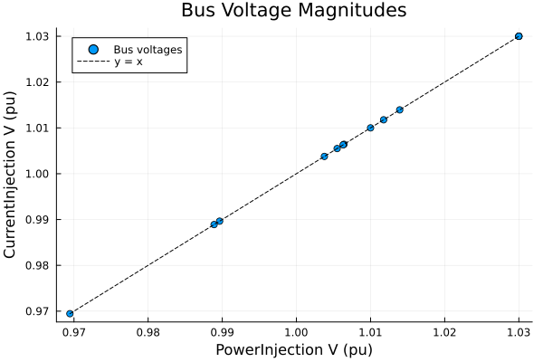
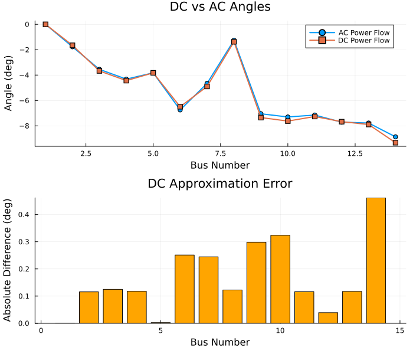
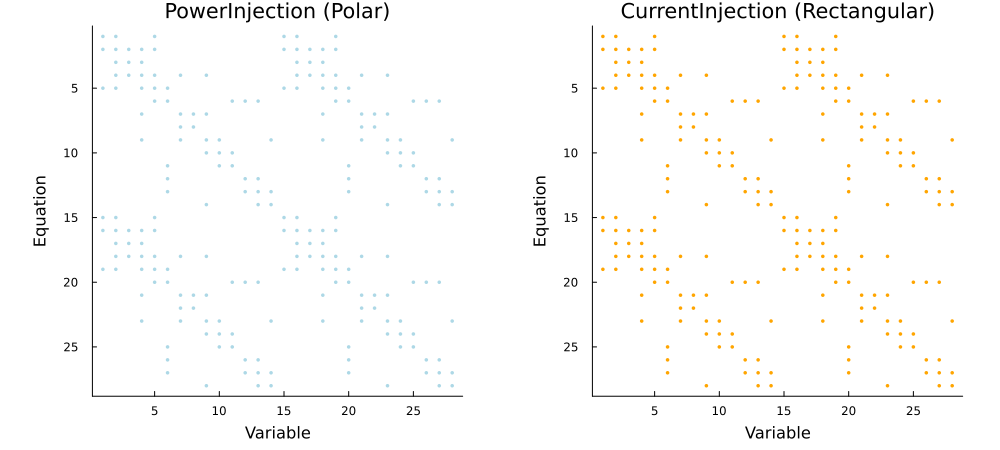
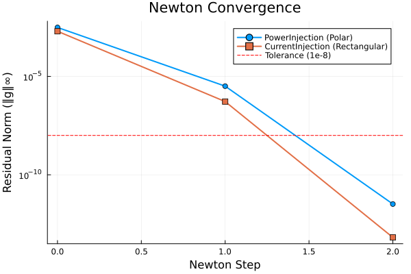

Power Flow Formulations and Solvers
This notebook compares the formulations and solution algorithms available for power flow analysis:
- Formulations:
PowerInjection,CurrentInjection,DCPowerFlow - Algorithms:
Newton,RobustNR,FastDecoupledXB - Linear solver options: KLU fill-reducing orderings
- Jacobian structure: sparsity patterns of the two AC formulations
- Convergence behavior: residual norm per Newton iteration
See the Power Flow guide for the theory.
Setup
using Powerful
using PowerfulCases
using Plots
using DataFrames
using SparseArrays
using Printf
# Internal function used in Part 4 to build the Jacobian sparsity pattern
using PowerfulCore: jacobian_sparsity_patternLoad Test System
# Load the IEEE 14-bus system
case_bundle = load("ieee14")
case = parse_network(case_bundle.raw)
sys = SystemModel(case)
println("Loaded IEEE 14-bus system:")
println(" Buses: ", length(sys.models.Bus))
println(" Branches: ", length(sys.models.Branch))
println(" Transformers: ", length(sys.models.Transformer2W))
println(" PQ Loads: ", length(sys.models.PQ))
println(" PV Generators: ", length(sys.models.PV))Loaded IEEE 14-bus system:
Buses: 14
Branches: 16
Transformers: 4
PQ Loads: 11
PV Generators: 4Part 1: AC Power Flow Formulations
PowerInjection vs CurrentInjection
Both formulations describe the same physical network, so they converge to the same operating point. They differ in the unknowns and equations the solver works with.
PowerInjection (polar):
- Variables: bus voltage angle θ and magnitude V
- Equations: active and reactive power balance at each bus
CurrentInjection (rectangular):
- Variables: real and imaginary bus voltage parts Vᵣ, Vᵢ
- Equations: real and imaginary current balance at each bus
Solve with PowerInjection (Default)
prob_pi = ACPowerFlowProblem(sys, PowerInjection())
sol_pi = solve(prob_pi, Newton())
println("PowerInjection Results:")
println(" Converged: ", sol_pi.converged)
println(" Iterations: ", sol_pi.iterations)
println(" Residual: ", sol_pi.residual_norm)
println(" Variables: $(length(sol_pi.dae.y)) (θ and V)")PowerInjection Results:
Converged: true
Iterations: 4
Residual: 3.255784530864503e-12
Variables: 28 (θ and V)Solve with CurrentInjection
prob_ci = ACPowerFlowProblem(sys, CurrentInjection())
sol_ci = solve(prob_ci, Newton())
println("CurrentInjection Results:")
println(" Converged: ", sol_ci.converged)
println(" Iterations: ", sol_ci.iterations)
println(" Residual: ", sol_ci.residual_norm)
println(" Variables: $(length(sol_ci.dae.y)) (Vᵣ and Vᵢ)")CurrentInjection Results:
Converged: true
Iterations: 4
Residual: 6.550315845288424e-14
Variables: 28 (Vᵣ and Vᵢ)Verify Both Give the Same Physical Result
# PowerInjection solves for the voltage magnitude directly
v_pi = get_all_vars(sol_pi, :Bus, :v)
# CurrentInjection solves for rectangular components: V = √(Vᵣ² + Vᵢ²)
v_r_ci = get_all_vars(sol_ci, :Bus, :v_r)
v_i_ci = get_all_vars(sol_ci, :Bus, :v_i)
v_ci = sqrt.(v_r_ci.^2 .+ v_i_ci.^2)
max_diff = maximum(abs.(v_pi .- v_ci))
println("Maximum voltage magnitude difference: ", max_diff)Maximum voltage magnitude difference: 8.720801858430605e-13Plot the two solutions against each other
scatter(v_pi, v_ci,
xlabel="PowerInjection V (pu)",
ylabel="CurrentInjection V (pu)",
title="Bus Voltage Magnitudes",
label="Bus voltages",
legend=:topleft)
v_range = [minimum(v_pi), maximum(v_pi)]
plot!(v_range, v_range, ls=:dash, color=:black, label="y = x")
Part 2: DC Power Flow
Linear Approximation
DC power flow makes strong simplifications:
- All voltage magnitudes are 1.0 pu
- Angle differences are small: sin(θᵢ - θⱼ) ≈ θᵢ - θⱼ
- Branch resistance is neglected
- Reactive power is ignored
The result is a linear system in the bus angles, so a single Newton step reaches the solution. Typical uses are fast screening studies and initial guesses for AC power flow.
prob_dc = ACPowerFlowProblem(sys, DCPowerFlow())
sol_dc = solve(prob_dc, Newton())
println("DC Results:")
println(" Converged: ", sol_dc.converged)
println(" Iterations: ", sol_dc.iterations)
println(" Residual: ", sol_dc.residual_norm)
println(" Variables: $(length(sol_dc.dae.y)) (angles only)")DC Results:
Converged: true
Iterations: 2
Residual: 6.661338147750939e-16
Variables: 14 (angles only)DC vs AC Angle Comparison
θ_dc_deg = rad2deg.(get_all_vars(sol_dc, :Bus, :theta))
θ_ac_deg = rad2deg.(get_all_vars(sol_pi, :Bus, :theta))
abs_error = abs.(θ_dc_deg .- θ_ac_deg)
bus_numbers = sys.models.Bus.i
p1 = plot(bus_numbers, θ_ac_deg,
label="AC Power Flow", marker=:circle, lw=2,
xlabel="Bus Number", ylabel="Angle (deg)",
title="DC vs AC Angles")
plot!(p1, bus_numbers, θ_dc_deg,
label="DC Power Flow", marker=:square, lw=2)
p2 = bar(bus_numbers, abs_error,
xlabel="Bus Number", ylabel="Absolute Difference (deg)",
title="DC Approximation Error",
legend=false, color=:orange)
plot(p1, p2, layout=(2,1), size=(700, 600))
Error statistics for this case
println("DC approximation error:")
println(" Max absolute error: ", @sprintf("%.4f", maximum(abs_error)), " degrees")
println(" Mean absolute error: ", @sprintf("%.4f", sum(abs_error)/length(abs_error)), " degrees")DC approximation error:
Max absolute error: 0.4617 degrees
Mean absolute error: 0.1668 degreesDC power flow gives only angles; it says nothing about voltage magnitudes or reactive power.
Part 3: Algorithm Comparison
Newton vs RobustNR vs FastDecoupledXB
- Newton (default): native Newton-Raphson with the full Jacobian and the KLU sparse solver.
- RobustNR: uses the NonlinearSolve.jl backend, which adds globalization (trust region / line search). Useful for difficult cases.
- FastDecoupledXB: decouples the P-θ and Q-V equations and uses constant matrices that are factorized once. It needs more iterations, but each iteration is cheaper.
prob = ACPowerFlowProblem(sys, PowerInjection())
sol_nr = solve(prob, Newton())
sol_robust = solve(prob, RobustNR())
sol_fd = solve(prob, FastDecoupledXB())PowerFlowSolution{Float64}:
Converged: true
Iterations: 22
Residual: 8.35e-7
Variables: 28
Note that the tolerances differ: FastDecoupledXB defaults to abstol = 1e-6, the other two to 1e-8.
df_alg = DataFrame(
Algorithm = ["Newton", "RobustNR", "FastDecoupledXB"],
Converged = [sol_nr.converged, sol_robust.converged, sol_fd.converged],
Iterations = [sol_nr.iterations, sol_robust.iterations, sol_fd.iterations],
Residual = [@sprintf("%.2e", sol_nr.residual_norm),
@sprintf("%.2e", sol_robust.residual_norm),
@sprintf("%.2e", sol_fd.residual_norm)]
)| Row | Algorithm | Converged | Iterations | Residual |
|---|---|---|---|---|
| String | Bool | Int64 | String | |
| 1 | Newton | true | 4 | 3.26e-12 |
| 2 | RobustNR | true | 6 | 3.13e-09 |
| 3 | FastDecoupledXB | true | 22 | 8.35e-07 |
All three reach the same operating point:
v_nr = get_all_vars(sol_nr, :Bus, :v)
println("Max |V| difference, RobustNR vs Newton: ",
@sprintf("%.2e", maximum(abs.(get_all_vars(sol_robust, :Bus, :v) .- v_nr))))
println("Max |V| difference, FastDecoupledXB vs Newton: ",
@sprintf("%.2e", maximum(abs.(get_all_vars(sol_fd, :Bus, :v) .- v_nr))))Max |V| difference, RobustNR vs Newton: 8.06e-10
Max |V| difference, FastDecoupledXB vs Newton: 2.14e-08Part 4: Linear Solver Options
KLU Fill-Reducing Orderings
Each Newton iteration solves J·Δy = -g with the KLU sparse direct solver. The ordering controls how much fill-in the factorization creates:
:AMD(Approximate Minimum Degree): default:COLAMD(Column AMD): alternative ordering:natural: no reordering
The ordering changes the cost of factorization on large systems, not the solution.
sol_amd = solve(prob, Newton(ordering=:AMD))
sol_colamd = solve(prob, Newton(ordering=:COLAMD))
sol_natural = solve(prob, Newton(ordering=:natural))
println("KLU ordering comparison:")
println(" AMD: ", sol_amd.iterations, " iterations")
println(" COLAMD: ", sol_colamd.iterations, " iterations")
println(" natural: ", sol_natural.iterations, " iterations")
println("Max |y| difference, COLAMD vs AMD: ", maximum(abs.(sol_colamd.dae.y .- sol_amd.dae.y)))
println("Max |y| difference, natural vs AMD: ", maximum(abs.(sol_natural.dae.y .- sol_amd.dae.y)))KLU ordering comparison:
AMD: 4 iterations
COLAMD: 4 iterations
natural: 4 iterations
Max |y| difference, COLAMD vs AMD: 8.326672684688674e-17
Max |y| difference, natural vs AMD: 3.3306690738754696e-16Part 5: Jacobian Structure
Sparsity Pattern
The Jacobian J = ∂g/∂y is sparse: an equation at a bus depends only on the variables of that bus and its neighbors. The pattern is determined by the models and the network topology.
J_pi = jacobian_sparsity_pattern(prob_pi.address_manager, prob_pi.sys, prob_pi.formulation)
J_ci = jacobian_sparsity_pattern(prob_ci.address_manager, prob_ci.sys, prob_ci.formulation)
n = size(J_pi, 1)
n_nonzero = nnz(J_pi)
println("PowerInjection Jacobian:")
println(" Size: $(n) × $(n)")
println(" Non-zeros: $(n_nonzero) of $(n * n)")
println(" Density: ", @sprintf("%.2f", 100 * n_nonzero / (n * n)), "%")
println(" Average non-zeros per row: ", @sprintf("%.1f", n_nonzero / n))
println("CurrentInjection Jacobian: $(size(J_ci, 1)) × $(size(J_ci, 2)), $(nnz(J_ci)) non-zeros")PowerInjection Jacobian:
Size: 28 × 28
Non-zeros: 216 of 784
Density: 27.55%
Average non-zeros per row: 7.7
CurrentInjection Jacobian: 28 × 28, 216 non-zerosCompare the PowerInjection and CurrentInjection Patterns
p1 = spy(J_pi,
title="PowerInjection (Polar)",
xlabel="Variable", ylabel="Equation",
legend=false, color=:blues, markersize=2,
left_margin=5Plots.mm, bottom_margin=5Plots.mm)
p2 = spy(J_ci,
title="CurrentInjection (Rectangular)",
xlabel="Variable", ylabel="Equation",
legend=false, color=:orange, markersize=2,
left_margin=5Plots.mm, bottom_margin=5Plots.mm)
plot(p1, p2, layout=(1,2), size=(1000, 450))
Part 6: Convergence Behavior
Residual Norm per Newton Iteration
Near the solution, Newton's method converges quadratically: the residual norm is roughly squared at each iteration.
The solver checks ‖g‖∞ at the start of every iteration and stops once it is below abstol. Solving with maxiters = k therefore reports the residual norm after k - 1 Newton steps, which we use to record the convergence history.
function residual_history(prob; abstol=1e-8, max_steps=20)
history = Float64[]
for k in 1:(max_steps + 1)
sol_k = solve(prob, Newton(maxiters=k, abstol=abstol))
push!(history, sol_k.residual_norm)
sol_k.converged && break
end
return history
end
residuals_pi = residual_history(prob_pi)
residuals_ci = residual_history(prob_ci)
println("PowerInjection ‖g‖∞ per step: ", [@sprintf("%.2e", r) for r in residuals_pi])
println("CurrentInjection ‖g‖∞ per step: ", [@sprintf("%.2e", r) for r in residuals_ci])PowerInjection ‖g‖∞ per step: ["3.08e-03", "3.19e-06", "3.26e-12"]
CurrentInjection ‖g‖∞ per step: ["1.97e-03", "5.26e-07", "6.55e-14"]Plot both formulations
plot(0:(length(residuals_pi)-1), residuals_pi,
yscale=:log10,
xlabel="Newton Step",
ylabel="Residual Norm (‖g‖∞)",
title="Newton Convergence",
marker=:circle,
lw=2,
label="PowerInjection (Polar)")
plot!(0:(length(residuals_ci)-1), residuals_ci,
marker=:square,
lw=2,
label="CurrentInjection (Rectangular)")
hline!([1e-8], ls=:dash, color=:red, label="Tolerance (1e-8)")
Summary
Formulations
| Formulation | Variables | Notes |
|---|---|---|
| PowerInjection | θ, V (polar) | Default |
| CurrentInjection | Vᵣ, Vᵢ (rectangular) | Alternative when PowerInjection struggles |
| DCPowerFlow | θ only | Linear approximation, no voltage magnitudes or reactive power |
Algorithms
| Algorithm | Notes |
|---|---|
| Newton | Default choice |
| RobustNR | Globalized Newton via NonlinearSolve.jl, for convergence difficulties |
| FastDecoupledXB | More iterations with constant, pre-factorized matrices |
Practical Steps
- Start with defaults:
solve(prob, Newton()) - If convergence fails: try
RobustNR()orCurrentInjection() - For screening: use
DCPowerFlow()
Next Steps
- Multi-Island Power Flow - Systems with disconnected islands
- Time-Domain Simulation guide - Dynamic analysis
- Power Flow guide - Theoretical background